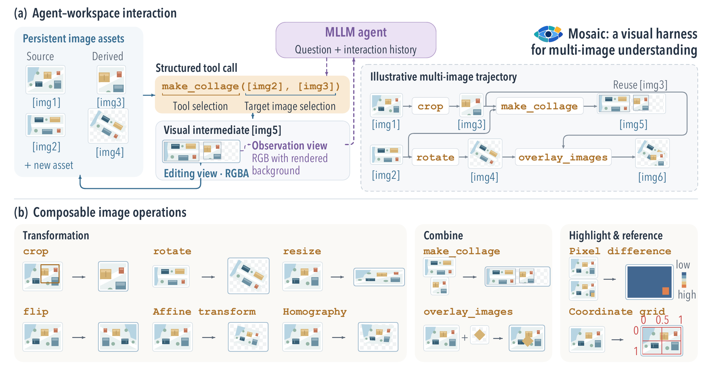
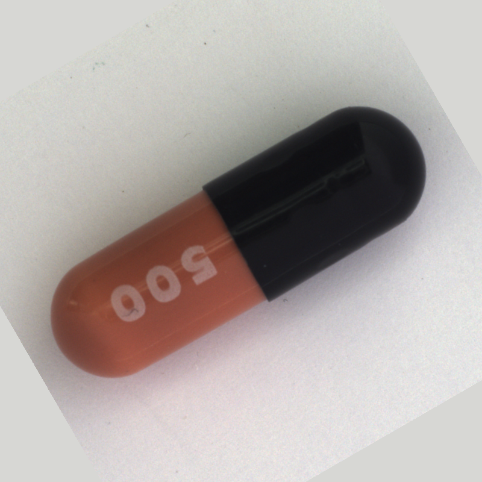
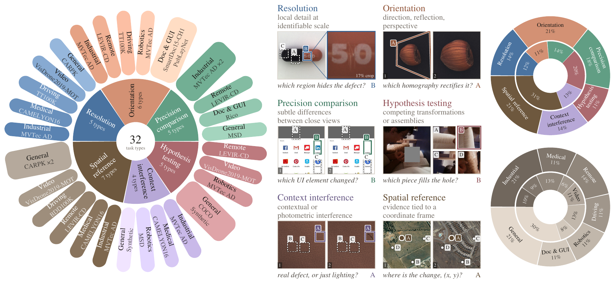
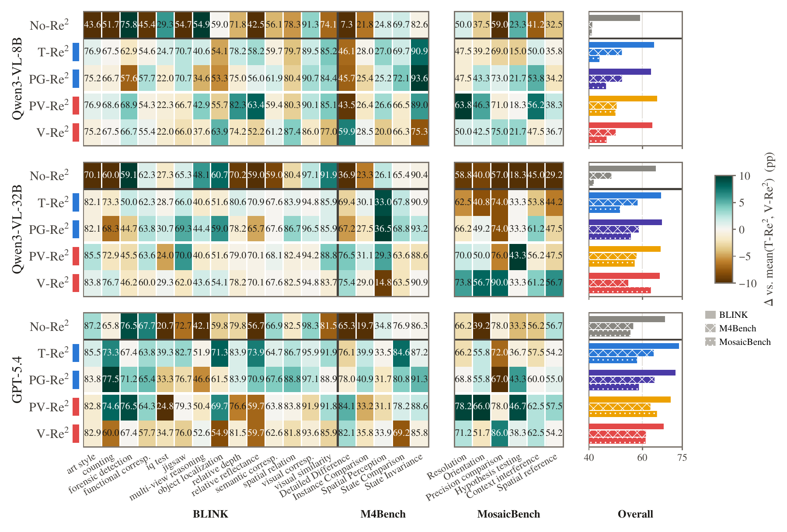

MULTI-IMAGE UNDERSTANDING · RESEARCH PROJECT
Reason with images.
Build the evidence.
Rethinking Multi-Image Re-Representation
in Multi-Image Understanding
An image workspace lets a vision-language model transform and combine what it sees. Mosaic retains these new views, so the agent can inspect the evidence and decide what to do next.
01 — THE METHOD
A workspace that keeps
every useful view.
Ten composable operations let an agent select regions, align views, combine images and expose differences. Source images remain intact; each tool result becomes a new, addressable image.

02 — INSIDE A REAL RUN
From a tool call
to new visual evidence.
Step through a recorded MosaicAgent checkpoint check. Here the prompt explicitly requests a crop: this demonstrates the execution loop, rather than an unprompted benchmark success.

Inspect image 1
Loading the recorded trajectory…
Precomputed replay · no model endpoint required
Example images: MVTec AD, MVTec Software GmbH, CC BY-NC-SA 4.0. MosaicBench transformations and the replayed crop retain these terms. Per-image source manifest ↗
03 — MOSAICBENCH
Look closer.
Compare precisely.
Questions probe visual evidence across images, including orientation, fine differences and transformations. The public evaluation release includes each question, its ordered candidate answers and ground truth.
540 samples have all their images included. For 20 COCO-derived samples, the release provides source references and filenames without image files. These counts describe the current public dataset; use the dataset card for coverage and licenses.

04 — THE PAPER
The right representation
depends on the task.
The paper compares five ways of organizing evidence. Visual operations are especially useful where a task needs precise visual inspection; gains are less consistent for higher-level semantic tasks.

05 — BUILD WITH MOSAIC
MosaicAgent-8B
The model trained to use the image workspace.
MosaicGym
Tools, agent protocol, evaluation runner and training adapters.
MosaicLLM-8B
The no-tool, single-turn comparison checkpoint.
Citation
@misc{zhang2026mosaic,
title={Rethinking Multi-Image Re-Representation in Multi-Image Understanding},
author={Gengyuan Zhang and Xiao Han and Xinyu Xie and Tong Liu and Volker Tresp},
year={2026},
eprint={2609.39363},
archivePrefix={arXiv},
primaryClass={cs.CV}
}